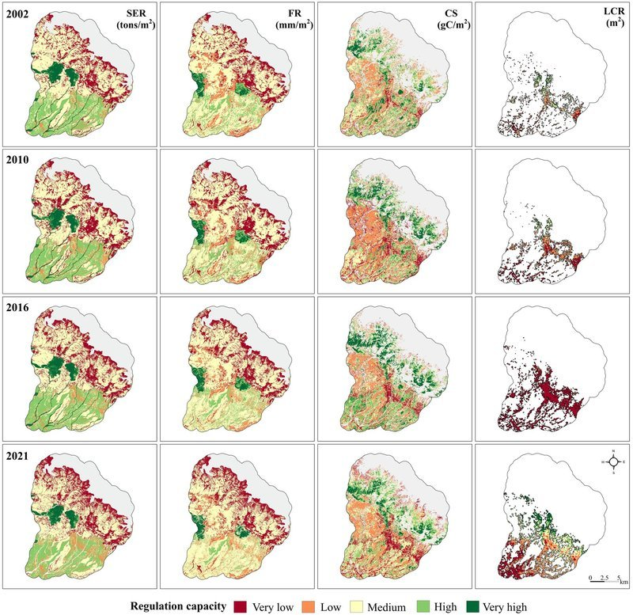

Ecosystem Services Mapping — Western Himalaya
Quantifying what nature does for cities across four regulation services and two decades
The problem
Urban planners in Himalayan cities rarely have spatially explicit data on what the surrounding landscape actually does for them — how much runoff the forests absorb, how much carbon the vegetation sequesters, how much cooler the city stays because of tree cover. Without this, ecosystem services are invisible in planning decisions.
This project made them visible.
Four services, two cities, four time points
I modelled and mapped four regulation ecosystem services (RES) across Dharamshala (DM) and Pithoragarh (PG) at four time points (2001/2002, 2008/2010, 2016, 2021), capturing how urbanisation has eroded each service over two decades.
| Service | What it measures | Model / proxy |
|---|---|---|
| SER — Soil erosion regulation | Capacity to prevent soil loss | Morgan-Morgan-Finney model · soil loss (tons/m²) |
| FR — Flood regulation | Capacity to modulate runoff from heavy rainfall | Modified SCS-CN model adapted for mountain terrain · runoff potential (mm/m²) |
| CS — Carbon sequestration | Carbon captured and stored by vegetation | CASA model · ESTARFM fusion (MODIS + Landsat 30 m) · NPP (gC/m²) |
| LCR — Local climate regulation | Vegetation-mediated cooling of ambient temperature | Land surface temperature index · urban boundary delineation |
The flood regulation model used a mountain-adapted modification of the SCS curve number approach (Azmal et al. 2020) — standard SCS-CN models underestimate runoff in steep terrain, so this adaptation was essential for realistic estimates in Himalayan landscapes.
Maps — spatiotemporal patterns


Each row is a time point; each column is a service. Reading down any column shows how that service has changed as the city grew. Reading across any row shows the spatial co-occurrence of services — where high-value areas for one service overlap with others, revealing multi-functional landscape patches worth prioritising for protection.
Hotspot and coldspot analysis
Beyond the maps, I identified statistically significant spatial clusters of high-value (hotspots) and low-value (coldspots) areas for each service using local spatial autocorrelation. These hotspot maps are the most planning-actionable output — they tell a city planner exactly where to focus protection efforts.


Future ecosystem services under growth scenarios
The same services were projected forward to 2040 under the three urban growth scenarios modelled in the urban growth project — BAU, ESP, and SED. This closes the loop: the scenario maps show where land cover changes; the future ES maps show what those changes cost in terms of flood protection, carbon, and climate regulation.


Key findings
Regulation ecosystem services declined across both cities over the study period, with the steepest losses in flood regulation and local climate regulation — the two services most directly tied to vegetation cover in built-up areas. Under the BAU and SED scenarios, these losses accelerate substantially by 2040. The ESP scenario retains significantly more ES capacity, particularly in the forest buffer zones identified as hotspots in the current analysis.
Publications
- Sharma, S., Joshi, P.K., and Fürst, C. (2022). Unravelling net primary productivity dynamics under urbanisation and climate change in the Western Himalaya. Ecological Indicators, 144, 109508.